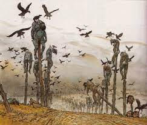
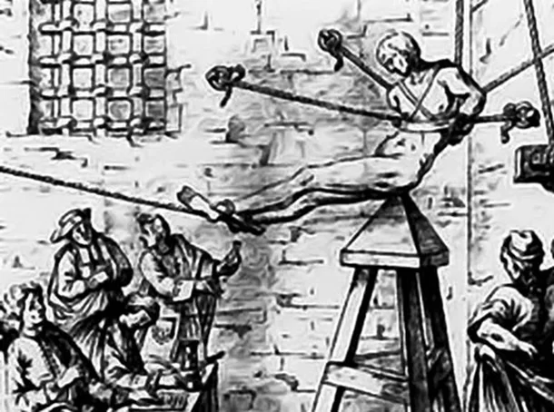
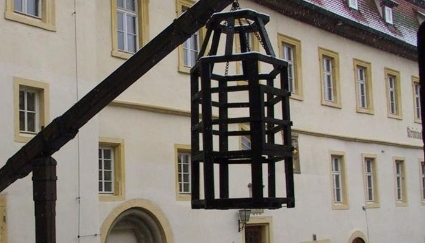

<!DOCTYPE html>

<html lang="pt-br">
</html>
<head>
<meta charset="UTF-8">
<title>Torturas da Idade Media</title>

<style>

p {

text-align:justify;
text-indent: 50px;
}

h1 {

font-family: Cambria;
font-size: 30pt;
color: black;
text-shadow: 2pt 2pt 2pt black;
}

</style>
</head>

<body bgcolor="gray" 
div id=interface>

<header id="cabeçalho">

<hgroup>

            

<h1><style="text-align:center; font-family: Arial;
font-size: 30pt;
color: black;
text-shadow: 2pt 2pt 2pt black><center>Torturas (Idade Média)</center></h1>

<body background="https://img.freepik.com/fotos-premium/folha-de-papel-antiga-fundo-de-textura-abstrata_7182-904.jpg?w=2000">

<h2><center>O que é tortura?</center><h2>

	<h2><center><strong><em>Saberia me dizer o que é?</em></strong></center></h2>

<h2><p>Tortura-disciplina. “II - submeter alguém, sob sua guarda, poder ou autoridade, com emprego de violência ou grave ameaça, a intenso sofrimento físico ou mental, como forma de aplicar castigo pessoal ou medida de caráter preventivo”.</p></h2>

<h2><center>Principais torturas da <em>(Idade Media)</em></center><h2>

<h2><p>1- Empalamento </p></h2>

	<center></center>
	
<h2><p> Uma das mais conhecidas técnicas de tortura é a do empalamento. Durante a Idade Média, inimigos tinham seus corpos atravessados por enormes estacas. Normalmente, o processo começava pelo ânus e seguia até a boca. E o mais assustador: a vítima poderia levar até três dias para morrer.</p></h2>

<h2><p>O personagem que ficou mais conhecido pela técnica foi Vlad III, o Empalador (o sujeito que inspirou Drácula). O tirano costumava apreciar uma refeição enquanto observava as estacas atravessando os orifícios de seus inimigos. Estima-se que Vlad tenha matado de 20 a 300 mil pessoas dessa maneira.</p></h2>

<h2><p>2- Berço de Jedas </p></h2>

<center></center>

<h2><p>Chamado de Berço ou Cadeira de Judas, essa técnica pode ser considerada uma “prima distante” da empalação. Com um pouco mais de sadismo, as vítimas eram obrigadas a sentar em pirâmides de madeiras lentamente até a morte. Presas por cordas, elas tinham seus orifícios anais ou vaginais “esticados” pelo tronco pontudo de madeira durante dias.</p></h2>

<h2><p>A intenção do efeito era empalar lentamente. Para isso, algumas delas recebiam pesos nas pernas a fim de aumentar a dor e a velocidade. E fora a humilhação, o Berço de Judas dificilmente era higienizado, assim podendo gerar infecções dolorosíssimas.</p></h2>

<h2><p>3- Caixão da Tortura</p></h2>

<center></center>

<h2><p>Usado como sentença para crimes como blasfêmia e roubo, o Caixão da Tortura funcionava assim: as pessoas julgadas eram obrigadas a ficar dentro da “cela móvel” durante dias até a morte. Extremamente apertadas, as gaiolas eram penduradas em praça pública para que sofressem exposição ao sol e também para que animais pudessem se alimentar do ser humano, enquanto vivo.</p></h2>

<center><iframe width="560" height="315" src="https://www.youtube.com/embed/Eh6VAAO7oqI?start=1" title="YouTube video player" frameborder="0" allow="accelerometer; autoplay; clipboard-write; encrypted-media; gyroscope; picture-in-picture" allowfullscreen></iframe></center>

<center><h1>Idade Media</h1></center>

<h2><p>A Idade Média é o período da história geral que se inicia no século V, logo após a queda do Império Romano do Ocidente, e termina no século XV, com a conquista de Constantinopla pelo Império Turco-Otomano. Foi um período marcado pela síntese da herança romana com a cultura dos povos bárbaros que invadiram o Império Romano.</p></h2>

<h2><p>A Igreja Católica tornou-se uma instituição poderosa e influente não apenas na religião, mas também na sociedade medieval. A invasão bárbara provocou a fuga da cidade em direção ao campo. A Europa ocidental ruralizava-se, e a riqueza era a terra. A agricultura tornou-se a principal atividade econômica, e a produção dos feudos era para o próprio sustento.</p></h2>

<h2><p>A partir do século XIII, por conta dos renascimentos comercial e urbano, o mundo medieval começou a entrar em crise. A centralização do poder nas mãos dos reis derrotou os senhores feudais, pacificou as revoltas servis e abriu as portas da Europa para a Idade Moderna.</p></h2>

<center><iframe width="560" height="315" src="https://www.youtube.com/embed/CTIs_RSPr84?start=1" title="YouTube video player" frameborder="0" allow="accelerometer; autoplay; clipboard-write; encrypted-media; gyroscope; picture-in-picture" allowfullscreen></iframe></center>

<h2><center><em>Criadores da Web</em></center></h2>


     <h2><center>Eduardo Cardoso</center></h2>
     <h2><center>Eduardo Peçanha</center></h2>
     <h2><center>Mateus Diego Iajko</center></h2>
	
	</body>
	</html>
    
